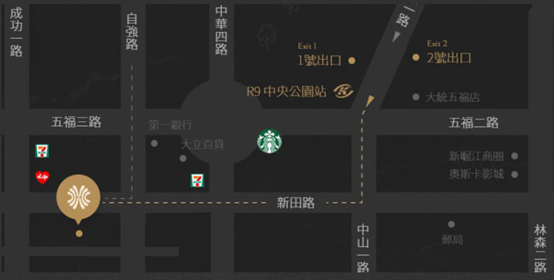

2023 / 6 / 7 (三) 9:00 ~ 16:50
地點 : 高雄漢來大飯店 9樓 金龍廳
(高雄市前金區成功一路266號)
2023 / 6 / 7 (三) 9:00 ~ 16:50
地點 : 高雄漢來大飯店 9樓 金龍廳
(高雄市前金區成功一路266號)
海洋委員會自107年成立迄今，依組織法賦予之任務與使命，綜理海洋事務之統合，加強海洋政策之規劃及推動，以達生態永續、海域安全、產業繁榮之海洋國家。
海洋是孕育萬物之搖籃，生命之起源，在現代科技蓬勃發展之同時，人類對海洋之認識卻仍極其有限；2019年4月發布「2019年聯合國秘書長海洋及海洋法報告」中，宣布自2021年起10年為「聯合國海洋科學促進永續發展十年」，國際間之海洋科學合作將更加緊密。由此可見，強化海洋科學研究，為當前國際重要趨勢，且臺灣為海洋國家，應當積極參與及響應，以接軌國際，促進國際交流合作。
藉由辦理2023臺灣海洋國際論壇，促進臺灣產、官、學、研與全球海洋領域專家學者互動交流，除了知識與經驗分享，也就推動海洋永續發展提供方向，促進國內海洋領域人員參與國際事務，俾利積極推動我國參與各項國際場域及國際海洋組織。
| 06 .07 | 台灣海洋國際論壇 |
|---|---|
| 09：00 - 09：30 | 報到 |
| 09：30 - 10：00 | 開幕式及大合照 |
|
10：00 - 10：40
專題演講 |
海洋教育以創造海洋及人之間的共生關係為目標 |
【 主持人 】 【 與談人 】 |
| 10：40 - 11：00 | 中場休息 |
|
11：00 - 12：15
海洋生態場次分組座談
|
【 主持人 】 【 與談人 】
|
| 12：15 - 13：30 | 午餐時間 |
|
13：30 - 15：00
海事安全場次分組座談
|
【 主持人 】 【 與談人 】
|
| 15：00 - 15：25 | 中場休息 |
|
15：25 - 16：40
海洋產業場次分組座談
|
【 主持人 】 【 與談人 】
|
| 16：40 - 16：50 | 閉幕儀式 |
【新左營站】
請在同車站內轉搭捷運，搭乘【捷運紅線】，從【高鐵左營站R16】搭至【中央公園站R9】1號出口，再步行約7分鐘抵達漢
來大飯店。
【高雄火車站】
請在同車站內轉搭捷運，搭乘【捷運紅線】，從【高雄火車站R11】搭至【中央公園站R9】1號出口，再步行約7分鐘抵達漢
來大飯店。
抵達高鐵左營站後，請在同車站內轉搭捷運。
請搭乘【捷運紅線】，從【高鐵左營站R16】搭至【中央公園站R9】1號出口，再步行約7分鐘抵達漢來大飯店。

國道3號 → 國道10號 → 國道1號 → 下高雄交流道367B出口(中正路出口) → 右轉沿著中正一路直行 → 左轉中山一路 → 再右 轉新田路 →漢來大飯店就在左手邊。
快速道路88號 → 國道1號 → 下高雄交流道367B出口(中正路出口) → 左轉沿著中正一路直行 → 左轉中山一路 → 再右轉新田 路 →漢來大飯店就在左手邊。